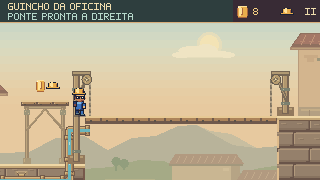
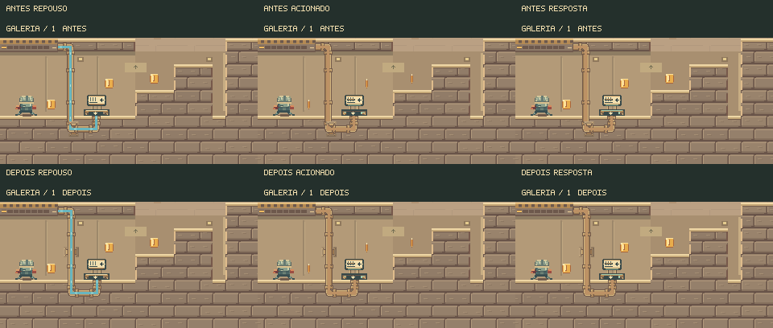
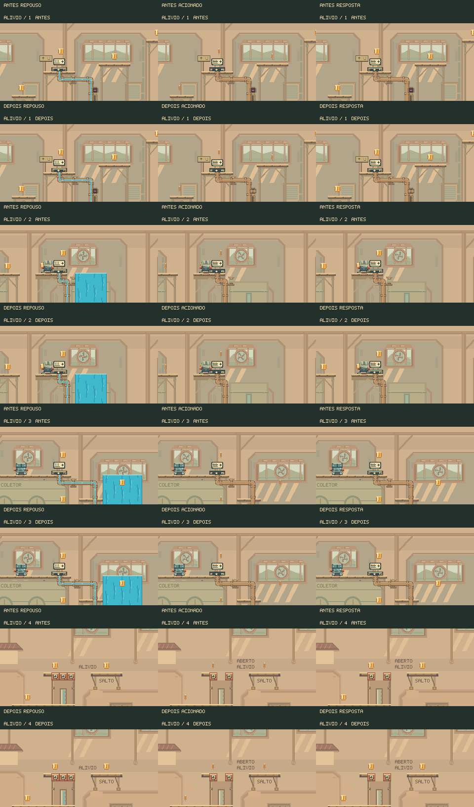
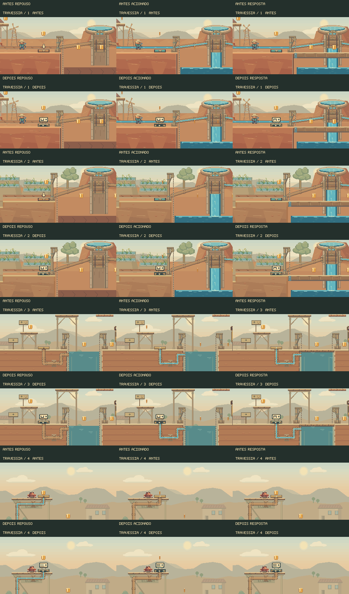

Ver o controle.
Entender a resposta.
Pedais, registros e a tampa de alívio receberam uma linguagem visual comum: esmalte claro, contorno escuro, latão e sinais que acompanham o mecanismo. A composição também foi revista para deixar espaço para pousar, observar e agir.
Acione. Observe. Escolha o caminho.
Os avisos agora acompanham a chegada real das pontes e identificam a saída fechada por cada registro. Na Galeria, o controle de baixo explica o efeito no corredor acima. Na contrapressão, a primeira grelha continua sendo um perigo.

O tabuleiro chegou à altura da sacada. Salte da margem para a ponte e siga à direita.
Fechado ou entre ciclos?
O manômetro da saída fechada repete o selo de filetes interrompidos do pedal. O traço simples permanece reservado à pausa do ciclo. Ao reabrir, o aviso de pressão volta antes da água perigosa.
Conexões com apoio
As braçadeiras acompanham trechos retos do cano, incluindo ligações curtas e retornos à esquerda. O visor conserva um fluxo contínuo pelas curvas e pelos encaixes.
Examinar os encaixes antes e depois
Estudos de arte preparados para inspecionar a tubulação; as capturas do seletor acima vêm das partidas.


Os 11 controles ampliados foram acionados com os comandos normais do Feka. Nove percursos chegaram ao final; outros dois documentam o acionamento e o retorno ao piso, sem encerrar a fase. Todos esses trechos ocorreram sem dano. A câmera das capturas é a do jogo.
3.778 testes TypeScript aprovados, zero falhas e um caso opcional ignorado. Build e nove execuções da campanha normal aprovados. As 33 capturas dos acionamentos foram conferidas em 1440 e 390 pixels.
O que a água está fazendo?
A pequena ponte no mostrador sobe junto com o tabuleiro. O indicador só confirma a chegada quando o movimento termina.
Cenário à esquerda e detalhe ampliado à direita. Estudos de arte a 30 fps, 8 segundos, sem áudio. O mecanismo é acionado em 1 s e rearmado em 5 s; a simulação move os componentes. Estas composições não são partidas.
Uma aparência que explica a interação
Reconhecer
O esmalte claro destaca os controles no cenário de barro e madeira. Os pictogramas distinguem ponte, isolamento e alternância de ramais. A seta da sentada fica gravada no pedal.
Confirmar
O pedal comprime e retorna. O mostrador acompanha a resposta real; formas e cores distinguem movimento e conclusão. O Pátio conserva a indicação do ramal atual enquanto mostra o pedido.
Preparar
Quatro apoios de manutenção ganharam espaço nas laterais. Moedas e placas de exploração foram afastadas dos mostradores, deixando a leitura livre na aproximação.
Aplicar
A tampa de alívio mantém barro rachado e recebe um selo próprio. Na luta contra o Prefeito, os mesmos pedais conservam os sinais de esperar, subir e atravessar ligados ao combate.
Revisão dos 18 pedais e da tampa
| Fase | Elementos | Papel no percurso |
|---|---|---|
| Travessia | 4 pedais | Aprender a erguer pontes; encontrar o registro da eclusa. |
| Pátio | 4 pedais | Alternar A/B, ler a transferência e operar a ponte e o retorno. |
| Respiros | 3 pedais | Isolar C e os dois ramais opcionais. |
| Subida | 1 pedal | Trazer o tabuleiro para continuar a subida. |
| Galeria | 1 pedal | Reconhecer o registro no túnel e seguir o cano até a saída acima. |
| Alívio | 3 pedais + tampa | Distinguir a tampa quebrável dos registros que podem ser reabertos. |
| Prefeito | 2 pedais | Ler disponibilidade, subida, travessia e espera durante a contrapressão. |
Cada par mostra antes e depois, com repouso, acionamento e resposta. O quadro do Prefeito mostra o acabamento em repouso; os estados do combate estão nos percursos abaixo.

Verificação da rodada inicial dos pedais
Oito percursos completos com comandos nativos chegaram ao final sem dano, mantendo as durações e os totais de moedas. A campanha normal também concluiu nove execuções no navegador, com deslocamento pelo mapa e acesso às fases opcionais.


3.770 testes TypeScript aprovados, zero falhas e um caso opcional ignorado; três testes JavaScript, validadores, verificação de tipos e build aprovados. Sete novos testes cobrem os controles. Os seis vídeos e os sete quadros foram conferidos em 1440 e 390 pixels.
Análise e reprodução · Percursos · Posicionamentos · Resultados consolidados